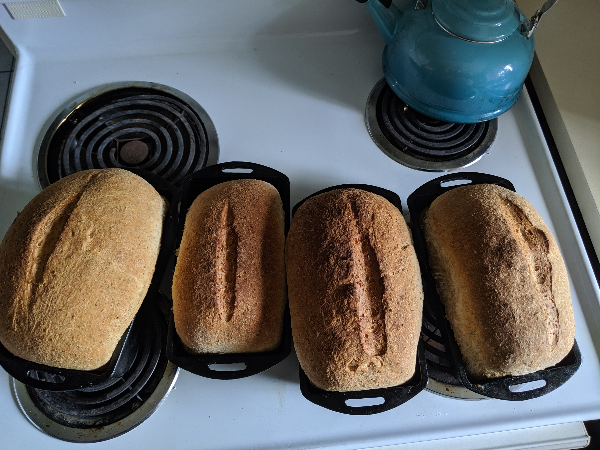

Four Loaves of Bread

Description
From La Dolce Vegan
Ingredients
- 1/5 cup yeast
- 1 cup water
- 1/2 cup sugar
- 4 cups water
- 12 cups flour
- 2 tbsp salt
- 1/2 cup olive oil
Steps
- Combine ingredients, let rise 1 hour
- Punch down and knead
- Separate into loaves, cover with oil
- Let rise 15 minutes in loaf pans
- Score the tops, bake 35-38 mins @ 350F
Bon Appetit!